Chapter 37 — Refuge Pointe
Rambleon Birdsong · November 26, 2026 · 6h 50m in Azeroth
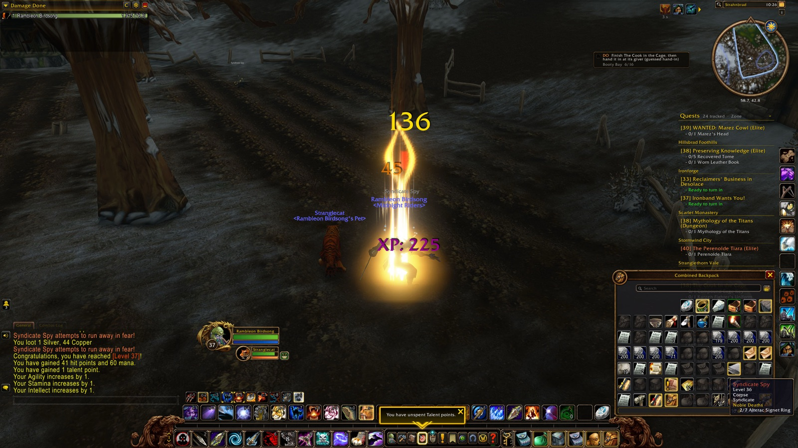
10:26 PM — Reached Level 37 in Strahnbrad
6h 50m in Azeroth tonight.
1 level.
9 quests.
84 places.
115 enemies slain.
4 deaths.
3 travelling companions.
Ramble on.
9Quests
84Places
115Enemies slain
7Loot
4Deaths
3People
47,433XP
14Lines of roleplay
Quests
| Quest | Turned in at | Lv |
|---|
| Stranglethorn Vale |
|---|
| Return to Corporal Kaleb | Rebel Camp | 36 |
| Water Elementals | Booty Bay | 36 |
| Excelsior | Booty Bay | 36 |
| The Cook in the Cage | Kurzen's Compound | 37 |
| Returning to Port | Booty Bay | 37 |
| Ironforge |
|---|
| Letter to Stormpike | The Library | 36 |
| Hillsbrad Foothills |
|---|
| Further Mysteries | Southshore Town Hall | 36 |
| Noble Deaths | Southshore Town Hall | 37 |
| Strahnbrad Mystery | Southshore Town Hall | 37 |
| Quest | Picked up at |
|---|
| Magical Analysis | Booty Bay |
| The Lost Dwarves | The Library |
| Ironband Wants You! | The Library |
| Reclaimed Treasures | The Library |
| Dark Council | Southshore Town Hall |
| Preserving Knowledge | Southshore |
| The Bloodsail Buccaneers | Booty Bay |
| Quest | Picked up at | Since |
|---|
| Sathrah's Sacrifice | Temple of the Moon | Chapter 3 |
| Crown of the Earth | Dolanaar | Chapter 5 |
| The Forgotten Heirloom | The Jansen Stead | Chapter 8 |
| Save Techbot's Brain! | Tinker Town | Chapter 9 |
| The Day After | Tinker Town | Chapter 9 |
| Westfall Stew | Westfall | Chapter 11 |
| Lost in the Thicket Things | Menethil Harbor | Chapter 16 |
| Essential Artificials | Tinker Town | Chapter 16 |
| Data Rescue | Tinker Town | Chapter 17 |
| The Grand Betrayal | Tinker Town | Chapter 17 |
| Shared Fury | Forest Song | Chapter 19 |
| The Tower of Althalaxx | Darkshore | Chapter 19 |
| Horrors in the Highland | The Green Belt | Chapter 20 |
| A Grim Task | Dun Modr | Chapter 20 |
| The Dark Iron War | Dun Modr | Chapter 20 |
| Death to the Dragonmaw | Wetlands | Chapter 20 |
| Defeat Nek'rosh | Angerfang Encampment | Chapter 20 |
| Syndicate Assassins | Southshore Town Hall | Chapter 21 |
| Insane Druids | Forest Song | Chapter 22 |
| Talk of the Town | Southshore | Chapter 22 |
| The Color of Blood | Old Town | Chapter 22 |
| Bring Back a Bang | Dun Modr | Chapter 23 |
| Slowing the Orc Advance | Silverwind Refuge | Chapter 25 |
| An Alarming Request | Southshore Town Hall | Chapter 25 |
| Costly Menace | Southshore | Chapter 25 |
| Reclaimers' Business in Desolace | Hall of Explorers | Chapter 25 |
| Crashing the Wickerman Festival | Southshore | Chapter 28 |
| Stonegear's Search | Hall of Arms | Chapter 28 |
| Darkspear Islands Clash | Hall of Arms | Chapter 28 |
| Raptor Mastery | Nesingwary's Expedition | Chapter 31 |
| Shady Saltseers | The Salty Sailor Tavern | Chapter 32 |
| The Saltseer Captain | The Salty Sailor Tavern | Chapter 32 |
| Colonel Kurzen | Rebel Camp | Chapter 32 |
| Panther Mastery | Nesingwary's Expedition | Chapter 33 |
| Zanzil's Secret | The Salty Sailor Tavern | Chapter 33 |
| The Thandol Span | Thandol Span | Chapter 34 |
| WANTED: Marez Cowl | Refuge Pointe | Chapter 34 |
| Stromgarde Badges | Refuge Pointe | Chapter 34 |
| Anyone Can Cook | Boulder'gor | Chapter 35 |
| Crushridge Warmongers | Southshore | Chapter 36 |
| The Captain's Chest | Booty Bay | Chapter 36 |
| Troll Witchery | Rebel Camp | Chapter 36 |
| Lost Shipping Crate | Rebel Camp | Chapter 36 |
| Wand over Fist | Refuge Pointe | Chapter 36 |
| The Riverglades Report | Refuge Pointe | Chapter 36 |
| Stones of Binding | Drywhisker Gorge | Chapter 36 |
As far as Rambleon knows: a quest picked up before it was installed, or abandoned before it recorded that, is not here.
Scenes
8:17 PMA scene in The Savage Coast, alone
Rambleon Birdsong “hey”
Rambleon Birdsong “will u help me kill?”
10:52 PMOverheard in Strahnbrad: Titan Renn and Eldan Stormveil
Titan Renn moos at you. Mooooooooooo.
Eldan Stormveil “we need fire”
Eldan Stormveil “gg”
The Journey
369 moments, in order · fold
- 11:16 AM — Began the adventure
- 11:16 AM — Entered The Salty Sailor Tavern (Stranglethorn Vale)
- 11:18 AM — Entered Booty Bay (Stranglethorn Vale)
- 11:18 AM — Entered The Salty Sailor Tavern (Stranglethorn Vale)
- 2:18 PM — Entered The Salty Sailor Tavern (Stranglethorn Vale)
- 3:26 PM — Entered The Salty Sailor Tavern (Stranglethorn Vale)
- 3:26 PM — Entered Booty Bay (Stranglethorn Vale)
- 3:27 PM — Entered The Cape of Stranglethorn (Stranglethorn Vale)
- 3:29 PM — Entered Gurubashi Arena (Stranglethorn Vale)
- 3:29 PM — Entered Ruins of Jubuwal (Stranglethorn Vale)
- 3:29 PM — Entered Gurubashi Arena (Stranglethorn Vale)
- 3:29 PM — Entered The Cape of Stranglethorn (Stranglethorn Vale)
- 3:30 PM — Entered Stranglethorn Vale
- 3:32 PM — Entered Venture Co. Base Camp (Stranglethorn Vale)
- 3:33 PM — Entered Stranglethorn Vale
- 3:37 PM — Entered Rebel Camp (Stranglethorn Vale)
- 3:38 PM — Completed "Return to Corporal Kaleb"
- 3:38 PM — Looted Cap of Harmony (Uncommon)
- 3:42 PM — Entered Stranglethorn Vale
- 3:45 PM — Entered Nesingwary's Expedition (Stranglethorn Vale)
- 3:45 PM — Entered Stranglethorn Vale
- 3:46 PM — First Bloodscalp Scavenger slain
- 3:48 PM — Entered Ruins of Zul'Kunda (Stranglethorn Vale)
- 3:49 PM — First Bloodscalp Hunter slain
- 3:49 PM — Entered Stranglethorn Vale
- 3:50 PM — First Stranglethorn Raptor slain
- 3:50 PM — Entered Ruins of Zul'Kunda (Stranglethorn Vale)
- 3:51 PM — First Bloodscalp Scout slain
- 3:51 PM — Accepted "Where's the Key?"
- 3:55 PM — Looted Hillborne Axe of Holy Wrath (Uncommon)
- 3:56 PM — Entered Zuuldaia Ruins (Stranglethorn Vale)
- 4:02 PM — Died in Zuuldaia Ruins
- 4:02 PM — Died in Zuuldaia Ruins
- 4:02 PM — Entered Stranglethorn Vale
- 4:03 PM — Entered Nesingwary's Expedition (Stranglethorn Vale)
- 4:03 PM — Entered Stranglethorn Vale
- 4:04 PM — Entered Ruins of Zul'Kunda (Stranglethorn Vale)
- 4:04 PM — Back among the living
- 4:04 PM — Entered Zuuldaia Ruins (Stranglethorn Vale)
- 4:06 PM — Entered Ruins of Zul'Kunda (Stranglethorn Vale)
- 4:06 PM — First Bloodscalp Mystic slain
- 4:10 PM — 1/1 Green Hills of Stranglethorn - Page 26 — "Chapter IV"
- 4:12 PM — Entered Stranglethorn Vale
- 4:13 PM — Entered Ruins of Zul'Kunda (Stranglethorn Vale)
- 4:14 PM — First Bloodscalp Tiger slain
- 4:19 PM — First Bloodscalp Beastmaster slain
- 4:20 PM — Joined forces with Mr (Priest)
- 4:22 PM — 1/1 Green Hills of Stranglethorn - Page 14 — "Chapter II"
- 4:23 PM — Parted ways with Mr
- 4:23 PM — Entered Stranglethorn Vale
- 7:44 PM — Entered Stranglethorn Vale
- 7:50 PM — Entered Ruins of Zul'Kunda (Stranglethorn Vale)
- 7:51 PM — First Bloodscalp Hunter slain
- 7:52 PM — Entered Stranglethorn Vale
- 7:53 PM — First Crystal Spine Basilisk slain
- 7:54 PM — Entered The Savage Coast (Stranglethorn Vale)
- 7:55 PM — First Lesser Water Elemental slain
- 8:07 PM — 6/6 Water Elemental Bracers — "Water Elementals"
- 8:08 PM — First Saltwater Crocolisk slain
- 8:17 PM — A scene in The Savage Coast, alone (2 lines)
- 8:19 PM — Joined forces with Cherry (Paladin)
- 8:19 PM — Parted ways with Cherry
- 8:21 PM — Entered Zuuldaia Ruins (Stranglethorn Vale)
- 8:22 PM — First Elder Saltwater Crocolisk (elite) slain
- 8:22 PM — 1/1 Elder Crocolisk Skin — "Excelsior"
- 8:22 PM — Hearthed home to Booty Bay
- 8:22 PM — Entered The Salty Sailor Tavern (Stranglethorn Vale)
- 8:23 PM — Entered Booty Bay (Stranglethorn Vale)
- 8:23 PM — Completed "Water Elementals"
- 8:23 PM — Accepted "Magical Analysis"
- 8:23 PM — Bring the water elemental bracers to Archmage Ansirem Runeweaver in Dalaran. — "Magical Analysis"
- 8:24 PM — Completed "Excelsior"
- 8:24 PM — Looted Excelsior Boots (Uncommon)
- 8:24 PM — Looted Mystic Heavy Armor Kit (Uncommon)
- 8:27 PM — Flew from Booty Bay to Ironforge, Dun Morogh
- 8:27 PM — Entered Janeiro's Point (Stranglethorn Vale)
- 8:27 PM — Entered Southern Savage Coast (Stranglethorn Vale)
- 8:27 PM — Entered Bloodsail Compound (Stranglethorn Vale)
- 8:28 PM — Entered Southern Savage Coast (Stranglethorn Vale)
- 8:28 PM — Entered The Vile Reef (Stranglethorn Vale)
- 8:28 PM — Entered The Savage Coast (Stranglethorn Vale)
- 8:28 PM — Entered Bal'lal Ruins (Stranglethorn Vale)
- 8:28 PM — Entered Stranglethorn Vale
- 8:29 PM — Entered Duskwood
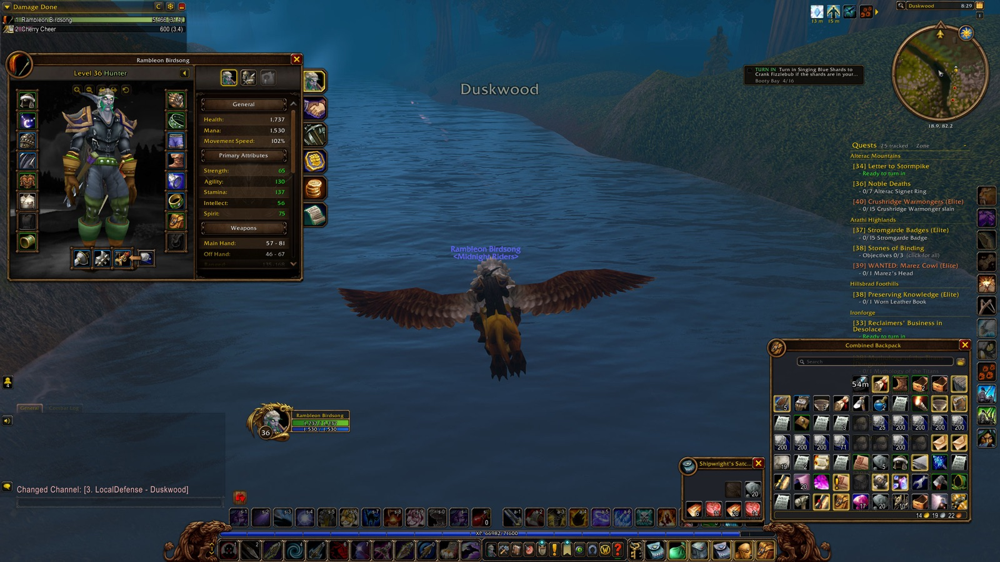
8:29 PM — Entered Duskwood- 8:29 PM — Entered The Hushed Bank (Duskwood)
- 8:30 PM — Entered The Darkened Bank (Duskwood)
- 8:30 PM — Entered Westfall
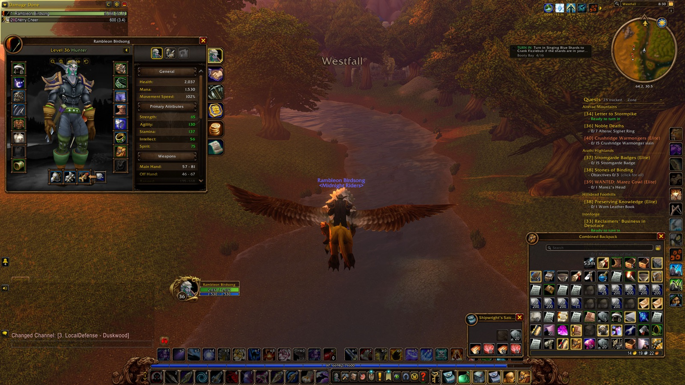
8:30 PM — Entered Westfall- 8:30 PM — Entered Forest's Edge (Elwynn Forest)
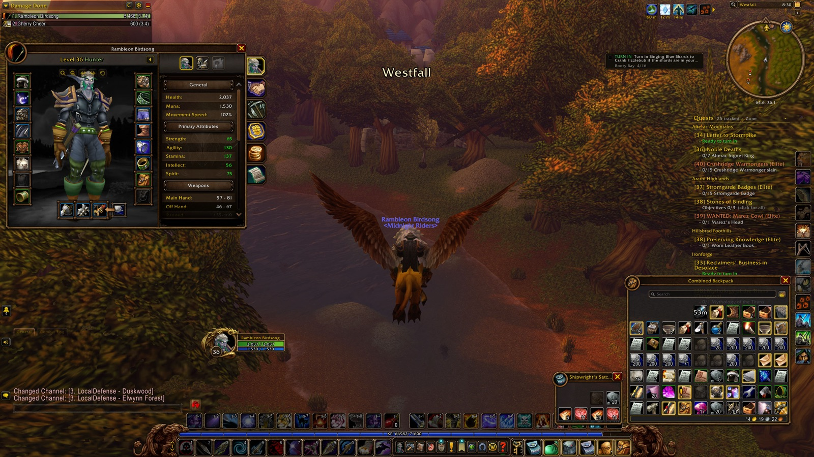
8:30 PM — Entered Elwynn Forest- 8:30 PM — Entered Westfall
- 8:30 PM — Entered Forest's Edge (Elwynn Forest)
- 8:30 PM — Entered Elwynn Forest
- 8:30 PM — Entered Mirror Lake Orchard (Elwynn Forest)
- 8:30 PM — Entered Mirror Lake (Elwynn Forest)
- 8:30 PM — Entered Elwynn Forest
- 8:30 PM — Entered Valley of Heroes (Stormwind City)
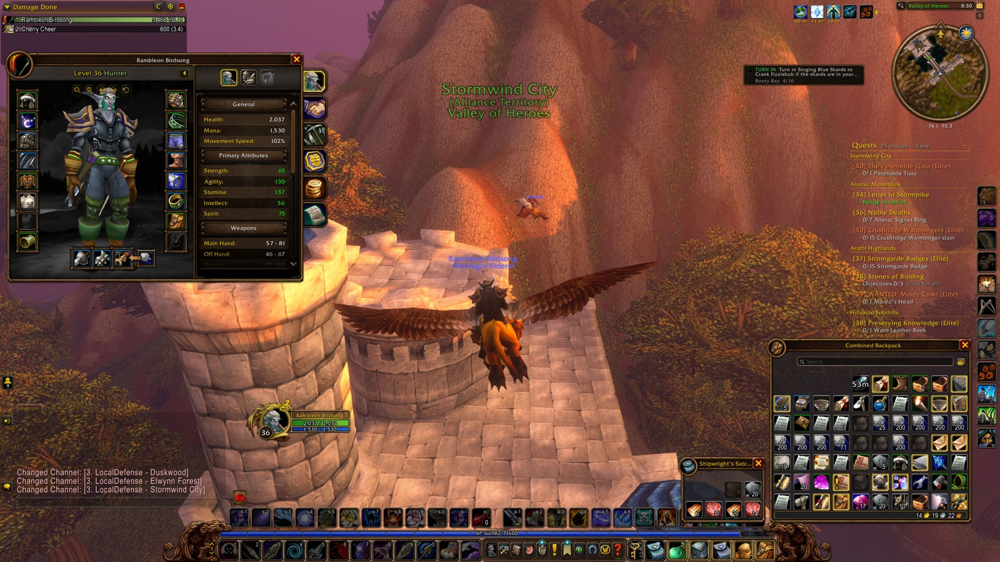
8:30 PM — Entered Stormwind City- 8:30 PM — Entered Elwynn Forest
- 8:31 PM — Entered Crystal Lake (Elwynn Forest)
- 8:31 PM — Entered Northshire Vineyards (Elwynn Forest)
- 8:31 PM — Entered Northshire Valley (Elwynn Forest)
- 8:31 PM — Entered Elwynn Forest
- 8:32 PM — Entered Burning Steppes
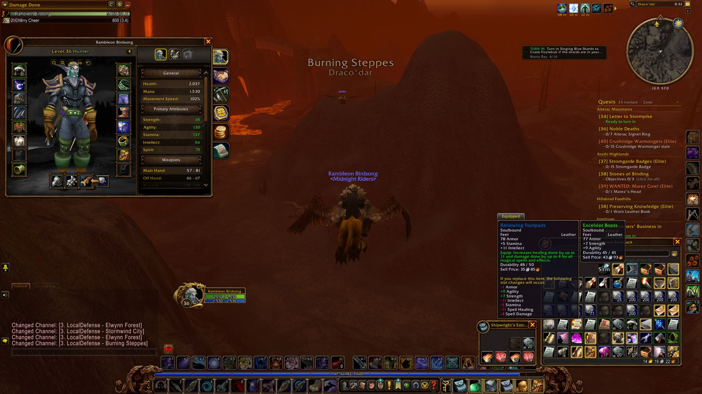
8:32 PM — Entered Burning Steppes- 8:32 PM — Entered Draco'dar (Burning Steppes)
- 8:32 PM — Entered Blackrock Mountain (Burning Steppes)
- 8:32 PM — Entered Burning Steppes
- 8:32 PM — Entered Blackrock Stronghold (Burning Steppes)
- 8:32 PM — Entered Burning Steppes
- 8:32 PM — Entered The Sea of Cinders (Searing Gorge)
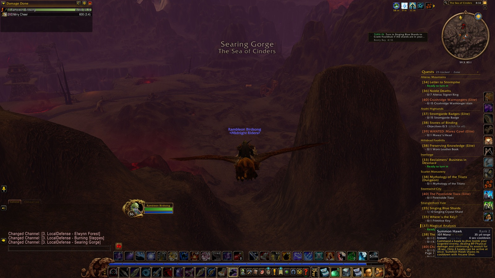
8:32 PM — Entered Searing Gorge- 8:33 PM — Entered The Cauldron (Searing Gorge)
- 8:33 PM — Entered Searing Gorge
- 8:33 PM — Entered Firewatch Ridge (Searing Gorge)
- 8:33 PM — Entered Searing Gorge
- 8:33 PM — Entered Dun Morogh
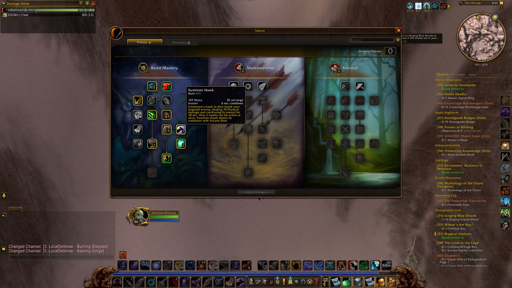
8:33 PM — Entered Dun Morogh- 8:33 PM — Entered The Tundrid Hills (Dun Morogh)
- 8:34 PM — Entered Dun Morogh
- 8:34 PM — Entered Kharanos (Dun Morogh)
- 8:34 PM — Entered Dun Morogh
- 8:34 PM — Entered Gates of Ironforge (Dun Morogh)
- 8:34 PM — Entered Ironforge
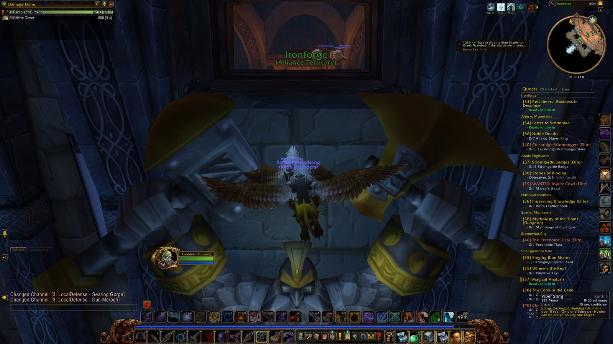
8:34 PM — Entered Ironforge- 8:34 PM — Entered The Great Forge (Ironforge)
- 9:22 PM — Entered The Military Ward (Ironforge)
- 9:22 PM — Entered Tinker Town (Ironforge)
- 9:23 PM — Entered Hall of Explorers (Ironforge)
- 9:23 PM — Entered The Library (Ironforge)
- 9:23 PM — Completed "Letter to Stormpike"
- 9:23 PM — Accepted "Further Mysteries"
- 9:23 PM — Bring the Decrypted Letter to Magistrate Maleb in Southshore. — "Further Mysteries"
- 9:23 PM — Accepted "The Lost Dwarves"
- 9:24 PM — Abandoned "Singing Blue Shards"
- 9:24 PM — Accepted "Ironband Wants You!"
- 9:27 PM — Abandoned "Fight for Warsong Gulch"
- 9:27 PM — Accepted "Reclaimed Treasures"
- 9:27 PM — Entered Hall of Explorers (Ironforge)
- 9:28 PM — Entered Ironforge
- 9:28 PM — Entered The Great Forge (Ironforge)
- 9:57 PM — Abandoned "Preserving Knowledge"
- 10:03 PM — Flew from The Great Forge to Southshore, Hillsbrad
- 10:03 PM — Entered Ironforge
- 10:03 PM — Entered Gates of Ironforge (Dun Morogh)
- 10:03 PM — Entered Dun Morogh
- 10:04 PM — Entered Amberstill Ranch (Dun Morogh)
- 10:04 PM — Entered Dun Morogh
- 10:05 PM — Entered Wetlands
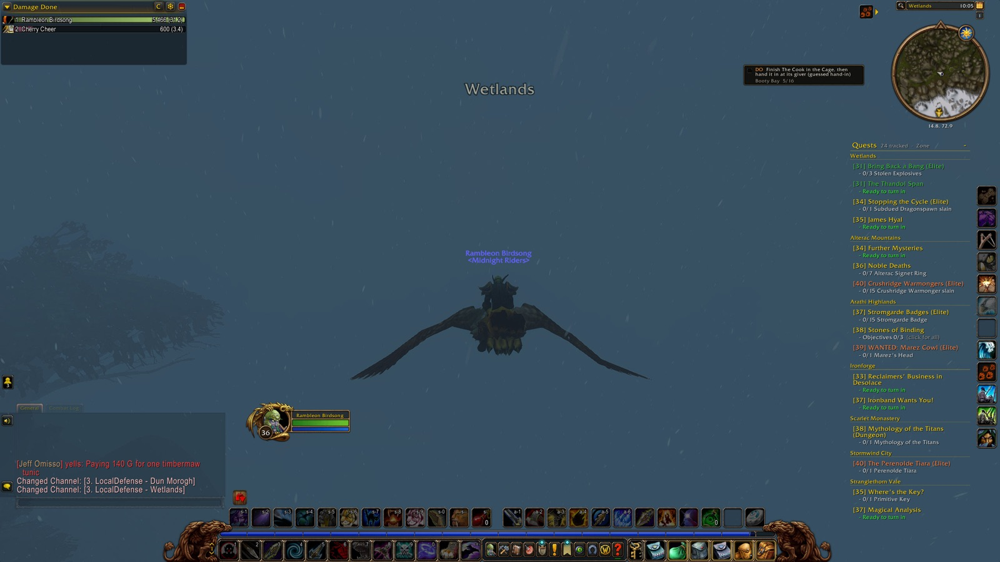
10:05 PM — Entered Wetlands- 10:05 PM — Entered Menethil Bay (Wetlands)
- 10:05 PM — Entered Menethil Harbor (Wetlands)
- 10:05 PM — Entered Wetlands
- 10:05 PM — Entered Bluegill Marsh (Wetlands)
- 10:05 PM — Entered Sundown Marsh (Wetlands)
- 10:06 PM — Entered Baradin Bay (Wetlands)
- 10:06 PM — Entered The Drowned Reef (Arathi Highlands)
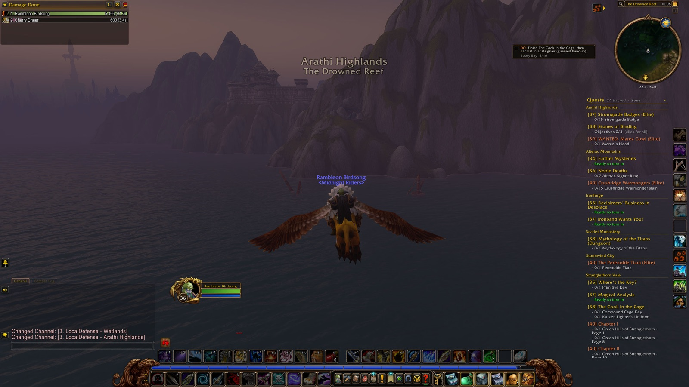
10:06 PM — Entered Arathi Highlands- 10:06 PM — Entered Faldir's Cove (Arathi Highlands)
- 10:06 PM — Entered The Drowned Reef (Arathi Highlands)
- 10:06 PM — Entered Stromgarde Keep (Arathi Highlands)
- 10:06 PM — Entered Arathi Highlands
- 10:06 PM — Entered Eastern Strand (Hillsbrad Foothills)
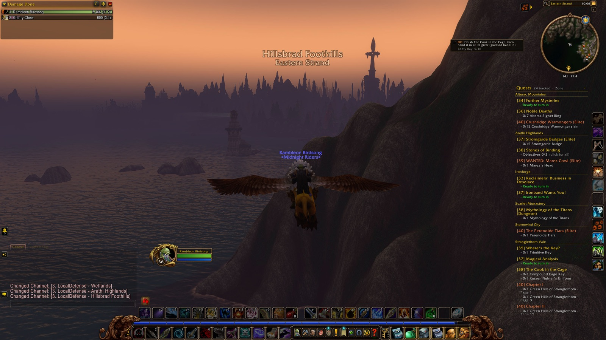
10:06 PM — Entered Hillsbrad Foothills- 10:06 PM — Entered Hillsbrad Foothills
- 10:07 PM — Entered Eastern Strand (Hillsbrad Foothills)
- 10:07 PM — Entered Southshore (Hillsbrad Foothills)
- 10:10 PM — Entered Southshore Town Hall (Hillsbrad Foothills)
- 10:10 PM — Completed "Further Mysteries"
- 10:10 PM — Accepted "Dark Council"
- 10:12 PM — Entered Southshore (Hillsbrad Foothills)
- 10:12 PM — Accepted "Preserving Knowledge"
- 10:13 PM — Abandoned "Where's the Key?"
- 10:14 PM — Flew from Southshore to Chillwind Camp, Western Plaguelands
- 10:14 PM — Entered Hillsbrad Foothills
- 10:15 PM — Entered Alterac Mountains
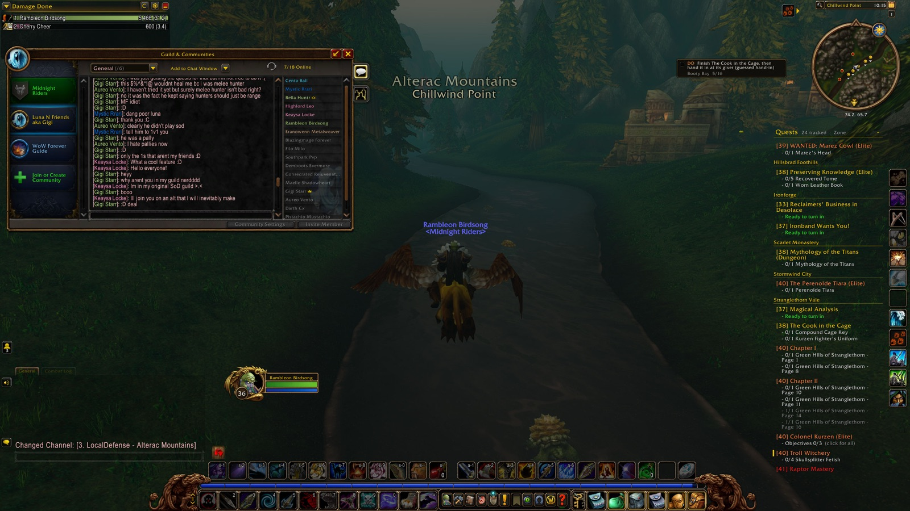
10:15 PM — Entered Alterac Mountains- 10:15 PM — Entered Chillwind Point (Alterac Mountains)
- 10:15 PM — Entered Chillwind Camp (Western Plaguelands)
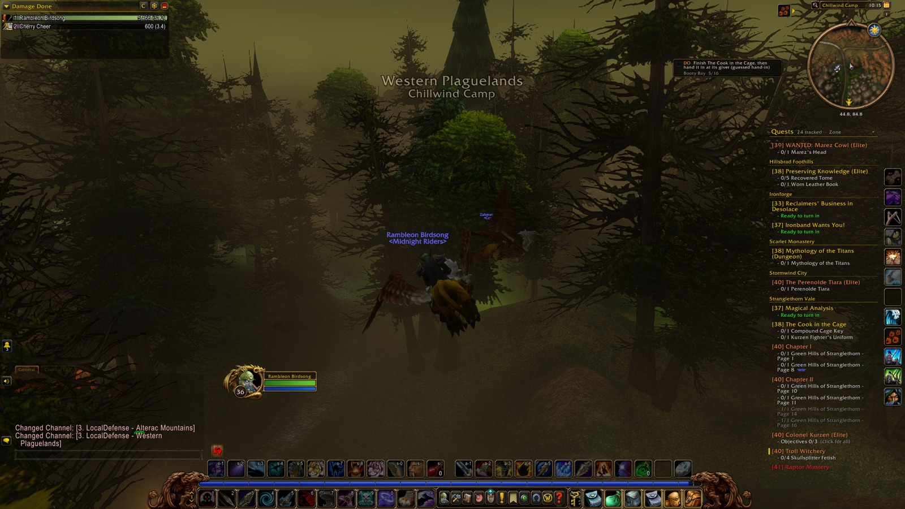
10:15 PM — Entered Western Plaguelands- 10:16 PM — Entered Chillwind Point (Alterac Mountains)
- 10:17 PM — Entered Alterac Mountains
- 10:20 PM — Discovered Strahnbrad
- 10:20 PM — Discovered Strahnbrad
- 10:20 PM — Entered Strahnbrad (Alterac Mountains)
- 10:21 PM — First Syndicate Spy slain
- 10:23 PM — First Argus Shadow Mage slain
- 10:26 PM — Reached Level 37
- 10:29 PM — First Barton slain
- 10:35 PM — First Syndicate Wizard slain
- 10:37 PM — Slain by Argus Shadow Mage in Strahnbrad
- 10:37 PM — 4/4 Argus Shadow Mage slain — "Dark Council"
- 10:37 PM — Entered Southshore (Hillsbrad Foothills)
- 10:37 PM — Entered Hillsbrad Foothills
- 10:38 PM — Entered Darrow Hill (Hillsbrad Foothills)
- 10:38 PM — Entered Hillsbrad Foothills
- 10:39 PM — Entered Alterac Mountains
- 10:39 PM — Entered Gallows' Corner (Alterac Mountains)
- 10:40 PM — Entered Alterac Mountains
- 10:40 PM — Entered Gallows' Corner (Alterac Mountains)
- 10:40 PM — Entered Strahnbrad (Alterac Mountains)
- 10:40 PM — Back among the living
- 10:41 PM — 7/7 Alterac Signet Ring — "Noble Deaths"
- 10:42 PM — Accepted "Strahnbrad Mystery"
- 10:52 PM — Overheard in Strahnbrad: Titan Renn and Eldan Stormveil (3 lines)
- 10:56 PM — Joined forces with Eldan (Paladin)
- 10:57 PM — 1/1 Discover the fiery mystery of Strahnbrad — "Strahnbrad Mystery"
- 10:57 PM — Parted ways with Eldan
- 10:58 PM — Entered Gallows' Corner (Alterac Mountains)
- 10:58 PM — Entered Alterac Mountains
- 10:59 PM — Entered Hillsbrad Foothills
- 11:02 PM — Entered Southshore (Hillsbrad Foothills)
- 11:02 PM — Entered Southshore Town Hall (Hillsbrad Foothills)
- 11:02 PM — Completed "Noble Deaths"
- 11:02 PM — Looted Brilliant Cloak (Uncommon)
- 11:02 PM — Completed "Strahnbrad Mystery"
- 11:02 PM — Entered Southshore (Hillsbrad Foothills)
- 11:03 PM — Flew from Southshore to Darkshire, Duskwood
- 11:03 PM — Entered Eastern Strand (Hillsbrad Foothills)
- 11:04 PM — Entered The Great Sea (Hillsbrad Foothills)
- 11:04 PM — Entered The Great Sea (Wetlands)
- 11:04 PM — Entered Baradin Bay (Wetlands)
- 11:05 PM — Entered Menethil Harbor (Wetlands)
- 11:05 PM — Entered Menethil Bay (Wetlands)
- 11:05 PM — Entered Wetlands
- 11:05 PM — Entered Dun Morogh
- 11:06 PM — Entered Gates of Ironforge (Dun Morogh)
- 11:06 PM — Entered Dun Morogh
- 11:06 PM — Entered Steelgrill's Depot (Dun Morogh)
- 11:06 PM — Entered Dun Morogh
- 11:06 PM — Entered Kharanos (Dun Morogh)
- 11:06 PM — Entered Dun Morogh
- 11:07 PM — Entered Searing Gorge
- 11:07 PM — Entered Firewatch Ridge (Searing Gorge)
- 11:07 PM — Entered Searing Gorge
- 11:07 PM — Entered Blackchar Cave (Searing Gorge)
- 11:07 PM — Entered Searing Gorge
- 11:07 PM — Entered Altar of Storms (Burning Steppes)
- 11:08 PM — Entered Burning Steppes
- 11:08 PM — Entered Draco'dar (Burning Steppes)
- 11:08 PM — Entered Burning Steppes
- 11:08 PM — Entered Elwynn Forest
- 11:08 PM — Entered Northshire Valley (Elwynn Forest)
- 11:09 PM — Entered Elwynn Forest
- 11:09 PM — Entered Valley of Heroes (Stormwind City)
- 11:09 PM — Entered Elwynn Forest
- 11:09 PM — Entered Mirror Lake (Elwynn Forest)
- 11:09 PM — Entered Elwynn Forest
- 11:09 PM — Entered Fargodeep Mine (Elwynn Forest)
- 11:10 PM — Entered The Darkened Bank (Duskwood)
- 11:10 PM — Entered Raven Hill Cemetery (Duskwood)
- 11:10 PM — Entered Duskwood
- 11:10 PM — Entered Brightwood Grove (Duskwood)
- 11:11 PM — Entered Darkshire (Duskwood)
- 11:34 PM — Entered Duskwood
- 11:38 PM — Entered Stranglethorn Vale
- 11:40 PM — Entered Kurzen's Compound (Stranglethorn Vale)
- 11:40 PM — First Kurzen Jungle Fighter slain
- 11:41 PM — Entered Stranglethorn Vale
- 11:42 PM — Entered Kurzen's Compound (Stranglethorn Vale)
- 11:43 PM — First Kurzen Medicine Man slain
- 11:45 PM — Entered Stranglethorn Vale
- 11:45 PM — Entered Kurzen's Compound (Stranglethorn Vale)
- 11:45 PM — Entered The Stockpile (Stranglethorn Vale)
- 11:45 PM — First Kurzen Commando slain
- 11:45 PM — Entered Kurzen's Compound (Stranglethorn Vale)
- 11:46 PM — Entered The Stockpile (Stranglethorn Vale)
- 11:47 PM — 1/1 Green Hills of Stranglethorn - Page 1 — "Chapter I"
- 11:49 PM — First Kurzen Headshrinker slain
- 11:51 PM — First Kurzen Elite slain
- 11:52 PM — First Kurzen Witch Doctor slain
- 11:53 PM — 1/1 Green Hills of Stranglethorn - Page 10 — "Chapter II"
- 11:54 PM — 6/6 Kurzen Elite slain — "Colonel Kurzen"
- 11:54 PM — Looted Mercenary Blade of the Monkey (Uncommon)
- 11:55 PM — 1/1 Compound Cage Key — "The Cook in the Cage"
- 11:56 PM — 1/1 Kurzen Fighter's Uniform — "The Cook in the Cage"
- 11:58 PM — First Kurzen Subchief slain
- 12:00 AM — First Kurzen Shadow Hunter slain
- 12:00 AM — Slain by Kurzen Subchief in The Stockpile
- 12:00 AM — Entered Stranglethorn Vale
- 12:01 AM — Back among the living
- 12:01 AM — Entered Nesingwary's Expedition (Stranglethorn Vale)
- 12:02 AM — Entered Stranglethorn Vale
- 12:04 AM — Entered Kurzen's Compound (Stranglethorn Vale)
- 12:05 AM — Completed "The Cook in the Cage"
- 12:05 AM — Accepted "Returning to Port"
- 12:06 AM — Hearthed home to Booty Bay
- 12:06 AM — Entered The Salty Sailor Tavern (Stranglethorn Vale)
- 12:06 AM — Entered Booty Bay (Stranglethorn Vale)
- 12:08 AM — Completed "Returning to Port"
- 12:08 AM — Looted Kurzen Headshrinker's Cinch (Uncommon)
- 12:08 AM — Accepted "The Bloodsail Buccaneers"
- 12:09 AM — Entered The Salty Sailor Tavern (Stranglethorn Vale)
- 12:10 AM — Entered The Salty Sailor (Stranglethorn Vale)
- 12:11 AM — Entered The Salty Sailor Tavern (Stranglethorn Vale)
- 12:11 AM — Entered Booty Bay (Stranglethorn Vale)
- 12:12 AM — Entered The Salty Sailor Tavern (Stranglethorn Vale)
- 12:31 AM — Entered The Salty Sailor Tavern (Stranglethorn Vale)
- 12:36 AM — Entered Booty Bay (Stranglethorn Vale)
- 12:36 AM — Flew from Booty Bay to Refuge Pointe, Arathi
- 12:37 AM — Entered Janeiro's Point (Stranglethorn Vale)
- 12:37 AM — Entered Southern Savage Coast (Stranglethorn Vale)
- 12:37 AM — Entered Bloodsail Compound (Stranglethorn Vale)
- 12:37 AM — Entered Southern Savage Coast (Stranglethorn Vale)
- 12:38 AM — Entered The Vile Reef (Stranglethorn Vale)
- 12:38 AM — Entered The Savage Coast (Stranglethorn Vale)
- 12:38 AM — Entered Bal'lal Ruins (Stranglethorn Vale)
- 12:38 AM — Entered Stranglethorn Vale
- 12:39 AM — Entered Duskwood
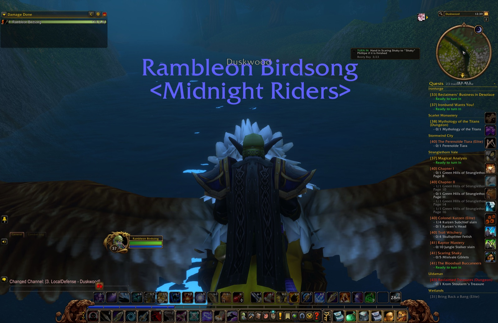
12:39 AM — Entered Duskwood- 12:39 AM — Entered The Hushed Bank (Duskwood)
- 12:39 AM — Entered The Darkened Bank (Duskwood)
- 12:39 AM — Entered Westfall
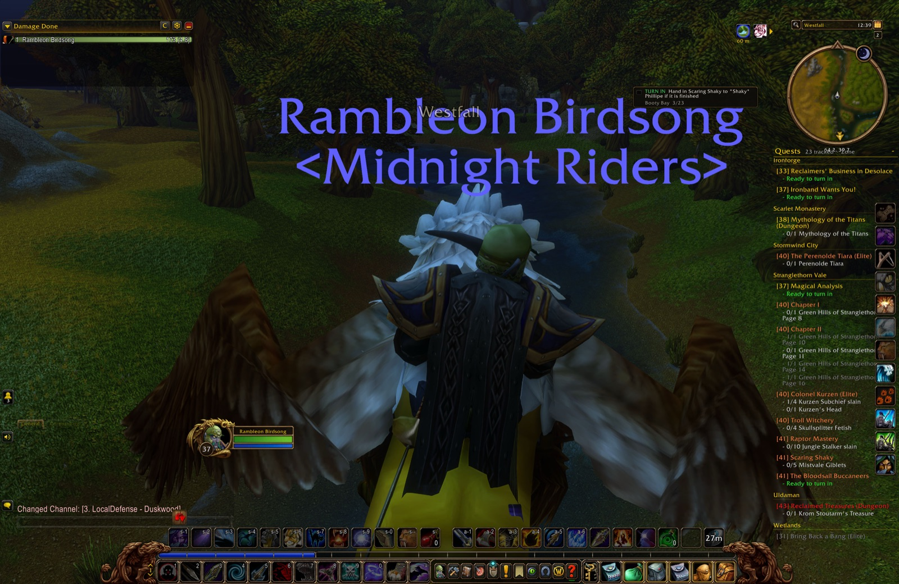
12:39 AM — Entered Westfall- 12:39 AM — Entered Forest's Edge (Elwynn Forest)
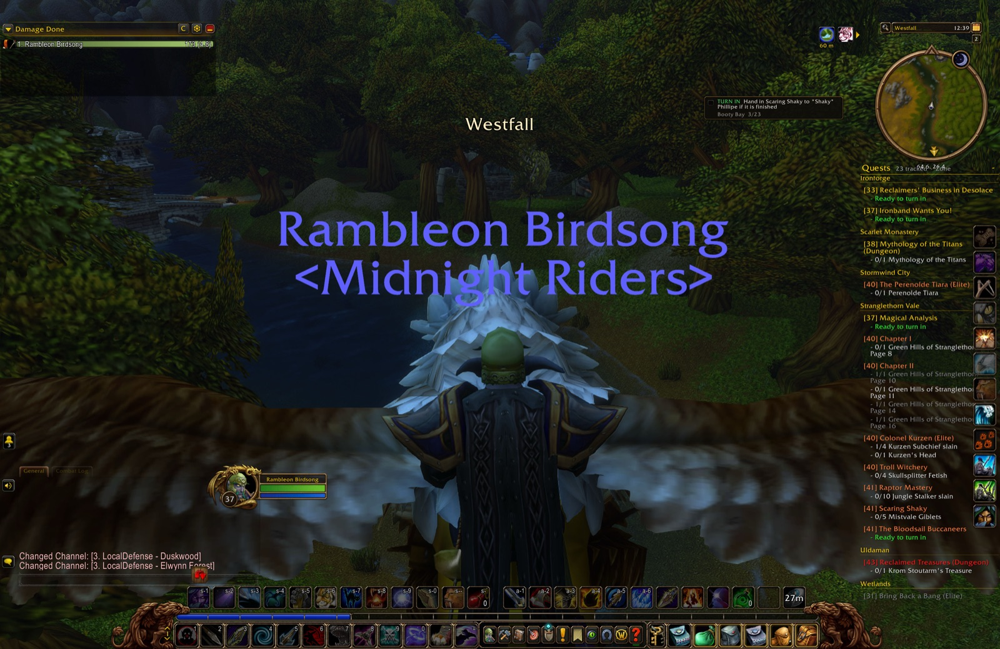
12:39 AM — Entered Elwynn Forest- 12:39 AM — Entered Westfall
- 12:39 AM — Entered Forest's Edge (Elwynn Forest)
- 12:40 AM — Entered Elwynn Forest
- 12:40 AM — Entered Mirror Lake Orchard (Elwynn Forest)
- 12:40 AM — Entered Mirror Lake (Elwynn Forest)
- 12:40 AM — Entered Elwynn Forest
- 12:40 AM — Entered Valley of Heroes (Stormwind City)
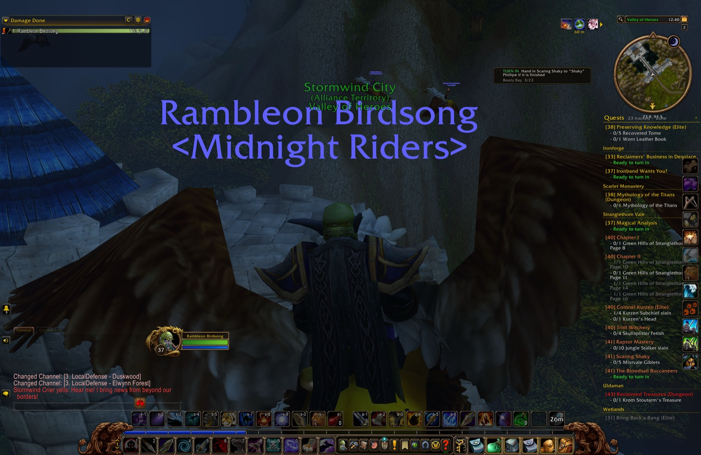
12:40 AM — Entered Stormwind City- 12:40 AM — Entered Elwynn Forest
- 12:41 AM — Entered Crystal Lake (Elwynn Forest)
- 12:41 AM — Entered Northshire Vineyards (Elwynn Forest)
- 12:41 AM — Entered Northshire Valley (Elwynn Forest)
- 12:41 AM — Entered Elwynn Forest
- 12:41 AM — Entered Burning Steppes
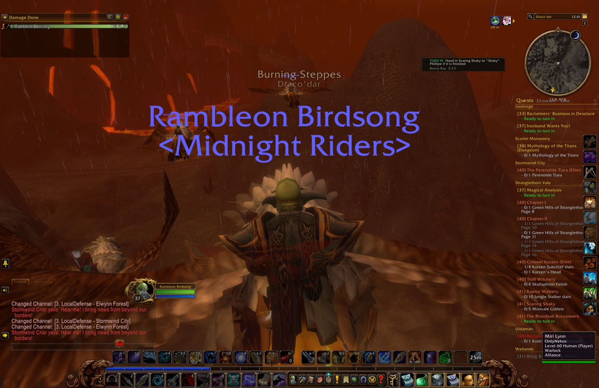
12:41 AM — Entered Burning Steppes- 12:41 AM — Entered Draco'dar (Burning Steppes)
- 12:42 AM — Entered Blackrock Mountain (Burning Steppes)
- 12:42 AM — Entered Burning Steppes
- 12:42 AM — Entered Blackrock Stronghold (Burning Steppes)
- 12:42 AM — Entered Burning Steppes
- 12:42 AM — Entered The Sea of Cinders (Searing Gorge)
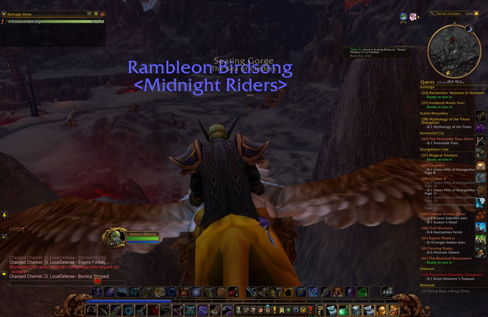
12:42 AM — Entered Searing Gorge- 12:42 AM — Entered The Cauldron (Searing Gorge)
- 12:43 AM — Entered Searing Gorge
- 12:43 AM — Entered Firewatch Ridge (Searing Gorge)
- 12:43 AM — Entered Searing Gorge
- 12:43 AM — Entered Dun Morogh
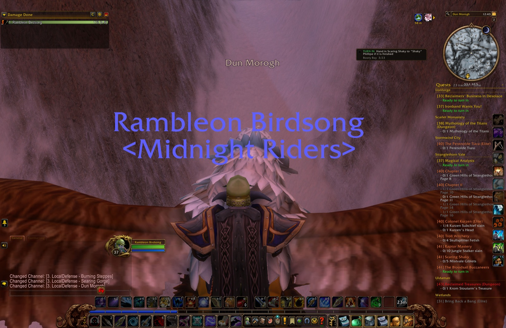
12:43 AM — Entered Dun Morogh- 12:43 AM — Entered The Tundrid Hills (Dun Morogh)
- 12:43 AM — Entered Dun Morogh
- 12:43 AM — Entered Kharanos (Dun Morogh)
- 12:43 AM — Entered Dun Morogh
- 12:44 AM — Entered Misty Pine Refuge (Dun Morogh)
- 12:44 AM — Entered Dun Morogh
- 12:44 AM — Entered Amberstill Ranch (Dun Morogh)
- 12:44 AM — Entered Dun Morogh
- 12:45 AM — Entered Wetlands
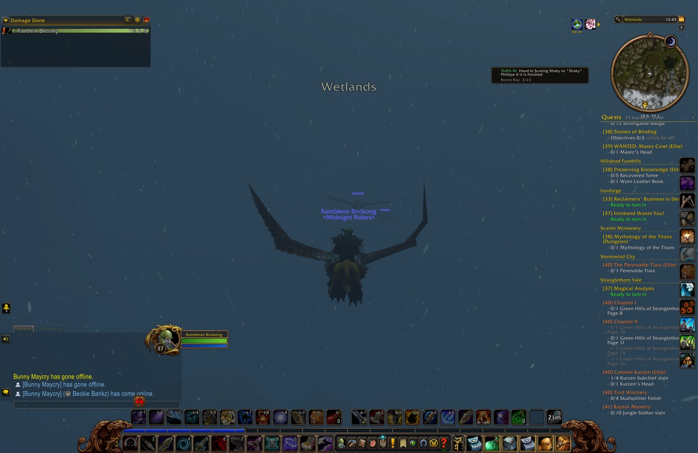
12:45 AM — Entered Wetlands- 12:45 AM — Entered Menethil Bay (Wetlands)
- 12:46 AM — Entered Menethil Harbor (Wetlands)
- 12:46 AM — Entered Baradin Bay (Wetlands)
- 12:46 AM — Entered The Lost Fleet (Wetlands)
- 12:46 AM — Entered Baradin Bay (Wetlands)
- 12:46 AM — Entered The Drowned Reef (Arathi Highlands)
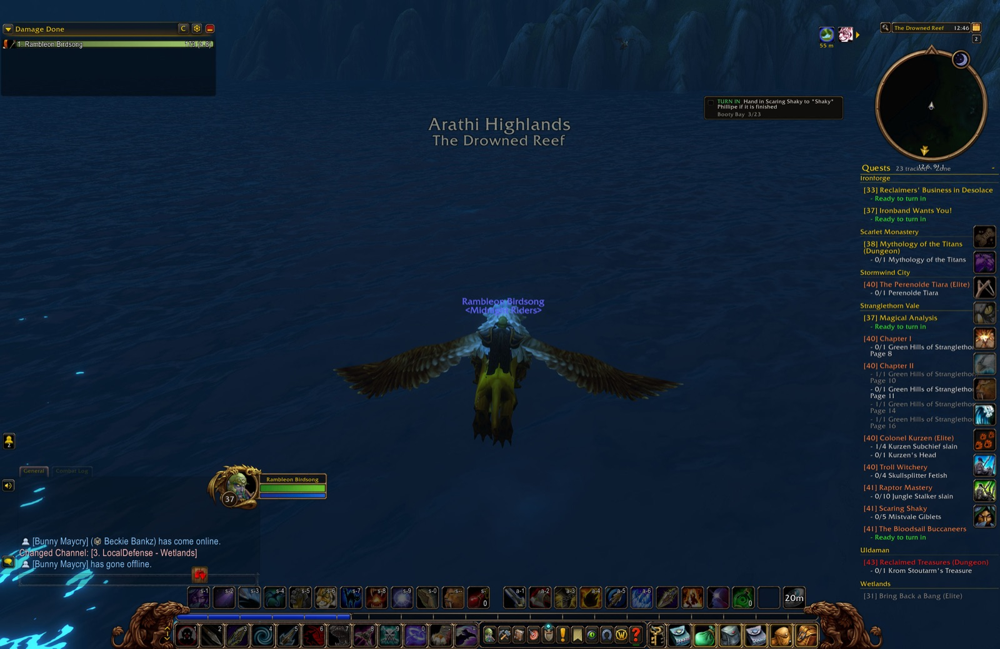
12:46 AM — Entered Arathi Highlands- 12:47 AM — Entered Arathi Highlands
- 12:47 AM — Entered Stromgarde Keep (Arathi Highlands)
- 12:47 AM — Entered Arathi Highlands
- 12:47 AM — Entered Circle of Inner Binding (Arathi Highlands)
- 12:47 AM — Entered Arathi Highlands
- 12:47 AM — Entered Refuge Pointe (Arathi Highlands)